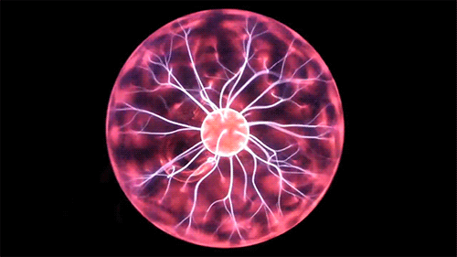
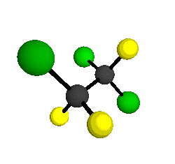
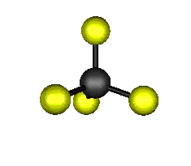
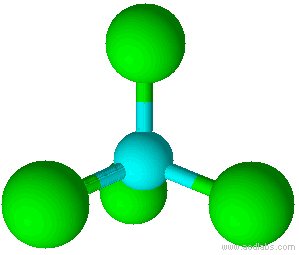
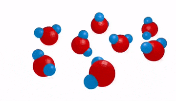
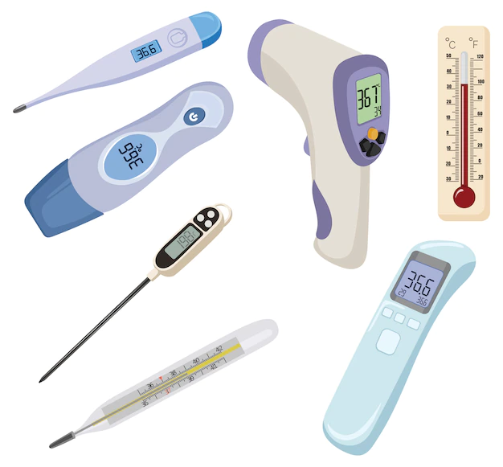
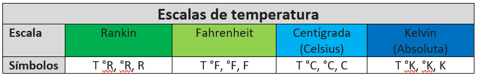
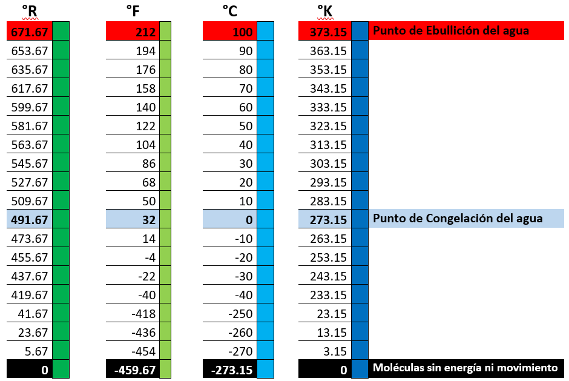
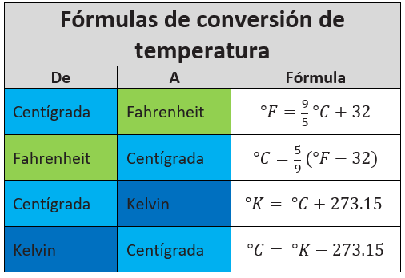

Termodinámica
Termodinámica: Es la rama de la física que estudia los efectos que la energía térmica (interna) ejerce sobre las propiedades de los cuerpos.
Energía. La energía es la capacidad que poseen los cuerpos para realizar una transformación (trabajo). Es la consecuencia de la actuación de los cuatro tipos de fuerzas fundamentales de la naturaleza: gravitatoria, electromagnética, nuclear fuerte y nuclear débil.
Tipos de energía:
⦁ Energía potencial. Debido a su posición.
⦁ Energía cinética. Debido a su movimiento.
⦁ Energía interna. Debido a su constitución (al movimiento y al potencial eléctrico de los átomos y moléculas).

Manifestaciones: Electricidad, Calor, Trabajo, Luz…

Ley de la conservación de la energía. La energía no se crea ni se destruye solo se transforma.
Energía Térmica (calorífica, cinética). Es la energía resultante de sumar todas las energías de movimiento de todos los átomos y moléculas de un cuerpo.
⦁ Energía de Vibración (en solidos). Debido al movimiento vibratorio y de balanceo.

⦁ Energía de rotación (en líquidos y gases). Debido al movimiento giratorio.

⦁ Energía de traslación (en líquidos y gases). Debido al movimiento por cambio de lugar.

Teoría Cinética Molecular. Establece que el calor y el movimiento están relacionados con el comportamiento de las moléculas y explica las propiedades de los estados de la materia.
Los postulados de la teoría cinética son:
⦁ La materia está constituida por pequeñas partículas llamadas moléculas.
⦁ Las moléculas se encuentran en constante movimiento produciendo energía cinética que determina la temperatura de un cuerpo.
⦁ Las moléculas interactúan entre sí, interviniendo fuerzas de atracción (cohesión) y separación (repulsión) entre ellas.
Temperatura
Temperatura (T). Es una medida de la energía cinética promedio de las partículas.
Termómetros. Son instrumentos usados para medir la temperatura de los cuerpos, haciendo uso de las propiedades termométricas de un material.

Propiedades termométricas. Son aquellas propiedades de un material que cambian de magnitud con los cambios de temperatura (longitud, resistencia eléctrica, presión, volumen…).
Escalas de temperatura



Ejemplo 1. Se tiene un recipiente con agua a una temperatura de 47°C, ¿Cuál es su temperatura en la escala Fahrenheit?
El cambio de escala es de Centígrada a Fahrenheit, sustituimos 47 en la fórmula correspondiente.
\( T° F=\left(\frac{9}{5}\right)T° C+32 \)
\( T° F=\left(\frac{9}{5}\right)\left(47\right)+32 \)
\( T° F=116.6° F \)
Ejemplo 2. El aluminio se funde a 660°C, ¿en la escala Kelvin que temperatura es?
El cambio de escala es de Centígrada a Kelvin, sustituimos 660 en la fórmula correspondiente.
\( T° K=T°C+273.15\)
\( T° K=660+273.15 \)
\( T° K=933.15° K \)
Ejemplo 3. La temperatura de una persona enferma es de 112 °F. ¿Esta persona tiene fiebre?
El cambio de escala es de Fahrenheit a Centígrada, sustituimos 112 en la fórmula correspondiente.
\( T° C=\left(\frac{5}{9}\right)\left(° F-32\right) \)
\( T° C=\left(\frac{5}{9}\right)\left(112-32\right) \)
\( T° C=\left(0.56\right)\left(80\right) \)
\( T° C=44.44°C \)
La persona si tiene fiebre.
Recursos adicionales
Haz click en el siguiente enlace para ver tutoriales relacionados con el tema.